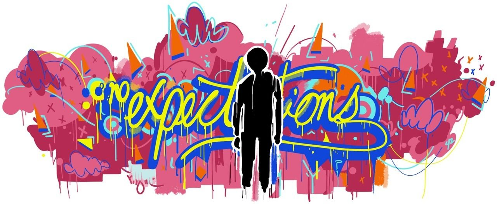
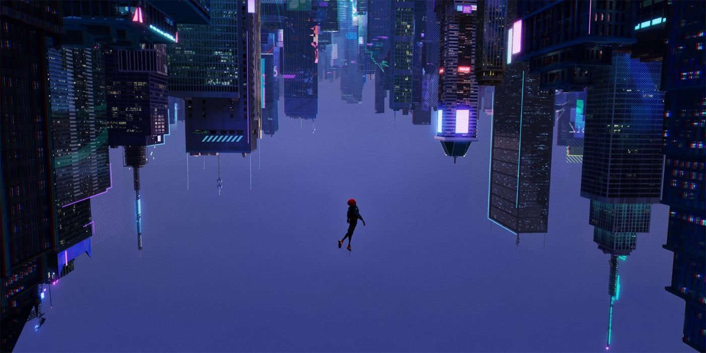

Week 2: Vinyl Cutting
What's up Danger
Vinyl cutting: is it digital fabrication?

of course it is. why wouldn't it be? To my knowledge, digital is the combination of computer aided design and a physical medium for computer aided manufacturing. vinyl cutting is this exactly. I definetely did zero of the work I did in illustrator by hand, nor could I. and the vinyl cutter in a way, carves out the desired shape from the sheet used. At least by my definintion, vinyl cutting is absolutely digital fabrication.
Raster vs Vector images
Bitmap, or raster images, are images that rely on the pixels of the image being in certain locations. This is what most image formats like jpg, png, etc use. Raster images are better for high quality pictures but not good at resizing without losing detail, specifically when enlarging. vector images are more line based. They used math and formulas to determine how details of an image will form. Adobe illustrator mainly uses vectors. Vector images are better for simpler line art and logos, as they can be infinitely resized without losing any detail. However, vectors are not the best at complex pictures. For the sake of this project, since vinyl cutting is mainly used for simpler graphics, we want to be working with vectors.
Project: Make a Shirt! |
The assignment was to design and apply a vinyl graphic to a piece of clothing via the heat press. There had to be a quote of more than 15 characters. The shirt also needed at least one graphic related to the quote. Minimum size of graphic is 4" x 4". Finally, we needed a photo of us wearing our finished product. I went with a shirt.
A shirt of what? Spider-Man of course!

Thinking of what I wanted on my shirt was probably the longest part of this process. I would say the time was wasted, but this was mainly just time I was spending doing other things thinking about what my shirt could be. eventually I chose a graphic of a scene from one of my favorite movies, Spider-man: Into the Spider-Verse.
The Leap of Faith, why I chose this scene
Throughout the movie, the main character, Miles Morales, struggles to find his way and do things that he wants to do while also living up to the expectations of others. These include the expectations of his parents and teachers to succeed and school and become their version of a well off adult, as well as the social expectations of his peers at his new school in which he feels an outcast
The burden of these expectations become extremly heavy after Miles is bitten by a radioactive spider and is gifted with spider powers just like Peter Parker. Peter Parker is soon killed by the main villain, so now Miles's must take on the mantle of spider-man and all of the expectations that come with it. the villain opens a rift in the multiverse, bringing other versions of spider-man from different universes who plan to stop kingpin as well
everyone else have been superheroes for years, in stark contrast with Miles, who only just got his powers, this causes him to doubt himself. In the end, Miles asks an older Peter Parker from a different universe how he will know whenever he is ready to be a true hero. The only answer that peter can give, is "You won't. It's a leap of faith. That's all it is, Miles. A leap of faith."
This picture is of Miles makking a literal leap of faith, to see if he can use his powers to swing through the city, like spider-man, to help his friends. At this point, Miles believes in himself that he can be who he has to be, his way. Taking the spider-man suit and spray painting it in his own style. This scene also has cool visual symbolism. Miles is falling down to the ground but the camera is flipped upside down, so as the director says, "Miles isn't falling through frame. He's RISING." Miles is able to put his powers to full use and help save New York as the new spider-man.
Making my design
Luckily, this was not my first time in illustrator. I used that scene and traced the buildings and Miles falling using the pen tool, then imported the graffiti spider-man logo and the comic text bubble style quote block to use in my design. I really liked how everything turned out.

Now for the failures, cutting the vinyl
I remember vinyl cutting going so smoothly during training. Oh how not smoothly it did not go for me today. My shirt was XL, so the graphic needed to be larger as well. Little did I realise that the width of my graphic was actually wider than the vinyl I was trying to cut it from. It might have been okay if the design still came out but with a part missing, but instead, the machine got caught on the vinyl, crumpling the sheet and ruining the design THREE TIMES IN A ROW! twice before I found out what was going on and tried to resize it, and a third time when apprently I did not shrink the image enough. Sadly, I was in too much of a panic watching the machine destroy my vinyl sheets to take a picture of it, but I still have two of the failed sheets on me, sadly I through out one of the failure before I could take a picture.
eventually, I was able to cut my graphic out properly, after that, it was time to do weeding, 99.9% of my weeding went well except for a bit in the top-right corner which I kind of had to wing by cutting bits off. I'm still very satisfied in the end.
The heating press
Honestly, I forgot to take any pictures of the heating press problems. This part was pretty uneventful for me thoug. No issues, this time. I didn't touch the top, burn and die so there isn't anything too exciting I can say about the heating press process, it worked, and it worked great, and I did not die...
The end product: my shirt
So after all the work, ups and downs, the shirt was finally printed. I was very happy with the way my design looked on the shirt, it is a design I would very much wear. Though if I were to go back and change things (which I very much want to do), I would see if I could get a black T-shirt to print the desing on. Also it turns out XL might have been a bit big and large should be enough. In the future, I want to redo this design on a black T-shirt, with the graphic higher up, and the graphic of the graffiti spider-man logo large on the back. This project was incredibly cool and fun.